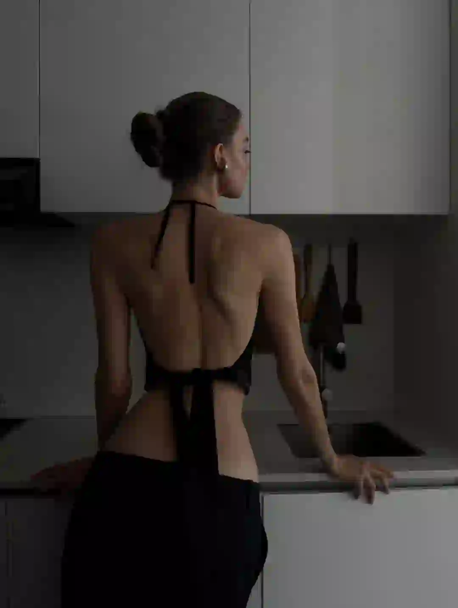
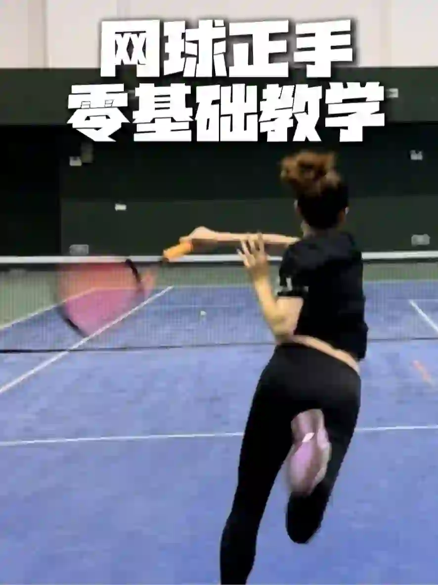

2026年3月25日
03月25日报告
生成时间：2026-03-25 · 范围：时尚 / 穿搭 / 网球
今日参考账号：Leah-LL / XXLTRY / FERMENTEDSHIRT
今日高信号标题：Share ~ ｜ C2H4® 2025 Winter Drop Lookbook ｜ 25AW LOOKBOOK PART.2
竞品策略变化：未命中监控竞品样本
今日高信号标题：Share ~ ｜ C2H4® 2025 Winter Drop Lookbook ｜ 25AW LOOKBOOK PART.2
竞品策略变化：未命中监控竞品样本

时尚 · 01
Share ~
⭐ 807
👍 4533
今天可学
- 内容结构：人物 + 4图，更像单点表达
- 收藏与点赞较平衡，可学选题包装，但仍需补强可执行细节
- 标签聚焦：#ins / #审美 / #审美积累 / #该有的肌肉线条

时尚 · 02
C2H4® 2025 Winter Drop Lookbook
⭐ 179
👍 245
今天可学
- 内容结构：文字卡 + 4图，更像单点表达
- 这条流量带有明显外部加成，只拆内容结构与包装，不原样复制流量来源
- 正文入口：潮流趋势/审美提升/灵感图片 潮流趋势灵感图片by:® 2025 Winter Drop Lookbook
- 标签聚焦：#廓系穿搭 / #每天一个穿搭灵感 / #潮流趋势 / #时尚穿搭
时尚 · 03
25AW LOOKBOOK PART.2
⭐ 200
👍 332
今天可学
- 内容结构：人物 + 0图，更像单点表达
- 收藏效率高，说明用户把它当成可复用模板/知识卡，不只是刷到即过
- 正文入口：（正文为空或未取到）
时尚 · 04
▪️审美积累｜真的高级感，不再脸上，随手拍
⭐ 357
👍 850
今天可学
- 内容结构：文字卡 + 0图，更像单点表达
- 收藏效率高，说明用户把它当成可复用模板/知识卡，不只是刷到即过
- 正文入口：（正文为空或未取到）
时尚 · 05
大幂幂这气质拿捏得恰到好处
⭐ 309
👍 705
今天可学
- 内容结构：未判定 + 3图，更像单点表达
- 这条流量带有明显外部加成，只拆内容结构与包装，不原样复制流量来源
- 标签聚焦：#气质女明星 / #女神 / #女明星 / #气场全开女王范
时尚赛道今日方法论
- 样本依据：25AW LOOKBOOK PART.2 / ▪️审美积累｜真的高级感，不再脸上，随手拍
- 当天结构信号：人物封面 + 4图 最强；优先学习样本 2 条，低收藏流量样本 0 条。
- 时尚赛道今天跑出来的是“审美判断 + 资料感整理”：像 25AW LOOKBOOK PART.2 这类高收藏样本，核心不是讲步骤，而是把趋势、风格线索和案例并排给足，用户才愿意以 60.2% 的收藏率反复回看。
- 执行建议：标题先抛出趋势/风格判断，再给明确收益；正文少讲空泛氛围，多给风格标签、对照案例和可复看的视觉结论，让内容更像灵感资料卡。
- 风险提醒：C2H4® 2025 Winter Drop Lookbook 已标记为 [不可复制]，只拆结构，不作为明日选题原样跟进。
今日参考账号：林小花 / Shanghai sights / 渐入佳境
今日高信号标题：2025年度穿搭合集✨做自己的美丽主理人 ｜ 上海秋冬男士街拍年度18图（秋冬篇） ｜ 用18图分享，普通人的早秋穿搭🍂
竞品策略变化：未命中监控竞品样本
今日高信号标题：2025年度穿搭合集✨做自己的美丽主理人 ｜ 上海秋冬男士街拍年度18图（秋冬篇） ｜ 用18图分享，普通人的早秋穿搭🍂
竞品策略变化：未命中监控竞品样本
穿搭 · 01
2025年度穿搭合集✨做自己的美丽主理人
⭐ 1594
👍 8223
今天可学
- 内容结构：文字卡 + 0图，更像单点表达
- 收藏与点赞较平衡，可学选题包装，但仍需补强可执行细节
- 评论活跃，适合加入观点冲突、对比案例或常见误区来拉讨论
- 正文入口：（正文为空或未取到）
穿搭 · 02
上海秋冬男士街拍年度18图（秋冬篇）
⭐ 610
👍 2803
今天可学
- 内容结构：人物 + 18图，更像资料型合集
- 收藏效率高，说明用户把它当成可复用模板/知识卡，不只是刷到即过
- 评论活跃，适合加入观点冲突、对比案例或常见误区来拉讨论
- 标签聚焦：#城市氛围感穿搭 / #ootd每日穿搭 / #上海街拍 / #街拍穿搭
穿搭 · 03
用18图分享，普通人的早秋穿搭🍂
⭐ 334
👍 933
今天可学
- 内容结构：人物 + 18图，更像资料型合集
- 收藏效率高，说明用户把它当成可复用模板/知识卡，不只是刷到即过
- 评论活跃，适合加入观点冲突、对比案例或常见误区来拉讨论
- 标签聚焦：#今年N个漂亮时刻 / #早秋穿搭 / #实用穿搭 / #办公室穿搭
穿搭 · 04
打工人穿搭01
⭐ 206
👍 377
今天可学
- 内容结构：人物 + 0图，更像单点表达
- 收藏效率高，说明用户把它当成可复用模板/知识卡，不只是刷到即过
- 评论活跃，适合加入观点冲突、对比案例或常见误区来拉讨论
- 正文入口：（正文为空或未取到）
穿搭 · 05
中国男士时尚试验家们
⭐ 74
👍 570
今天可学
- 内容结构：未判定 + 1图，更像单点表达
- 这条流量带有明显外部加成，只拆内容结构与包装，不原样复制流量来源
- 评论活跃，适合加入观点冲突、对比案例或常见误区来拉讨论
- 正文入口：米兰时装周又开始了，华流是不是顶流我不想去讨论，但是华人时尚博主们正在用自己的方式去传递当下的中国男士形象。太帅了。 注明：图片来自网络，仅用于分享。
- 标签聚焦：#米蘭時裝周 / #时尚 / #男士穿搭
穿搭赛道今日方法论
- 样本依据：上海秋冬男士街拍年度18图（秋冬篇） / 用18图分享，普通人的早秋穿搭🍂
- 当天结构信号：人物封面 + 0图 最强；优先学习样本 3 条，低收藏流量样本 0 条。
- 穿搭赛道今天最有效的是“整套可抄作业方案”：高收藏样本 打工人穿搭01 说明，只要场景清楚、look 数量够多、搭配结果一眼能看懂，就更容易拿到 54.6% 级别的收藏反馈。
- 执行建议：优先做通勤/职业/一周不重样/套装盘点这类清单式内容；封面先给完整上身结果，图组里再拆单品变化和搭配理由，不要只发单套氛围图。
- 风险提醒：中国男士时尚试验家们 已标记为 [不可复制]，只拆结构，不作为明日选题原样跟进。
今日参考账号：盖奥 / 网球gogogo / 黑胡子魔法师
今日高信号标题：网球正手零基础教学（新手入门） ｜ 网球标准：德约科维奇-正手慢动作分析！ ｜ 5.0定点直线｜快点！快点！在快点！🎾
竞品策略变化：未命中监控竞品样本
今日高信号标题：网球正手零基础教学（新手入门） ｜ 网球标准：德约科维奇-正手慢动作分析！ ｜ 5.0定点直线｜快点！快点！在快点！🎾
竞品策略变化：未命中监控竞品样本

网球 · 01
网球正手零基础教学（新手入门）
⭐ 19347
👍 27220
今天可学
- 内容结构：视频封面 + 视频，更像视频示范/单点表达
- 收藏效率高，说明用户把它当成可复用模板/知识卡，不只是刷到即过
- 标签聚焦：#网球 / #网球教学 / #网球正手 / #网球训练

网球 · 02
网球标准：德约科维奇-正手慢动作分析！
⭐ 6450
👍 7392
今天可学
- 内容结构：视频封面 + 视频，更像视频示范/单点表达
- 这条流量带有明显外部加成，只拆内容结构与包装，不原样复制流量来源
- 正文入口：最适合业余选手学习的网球动作~#网球 #网球教学 #德约科维奇 #国庆节 #WTT中国大满贯 #网球中国赛季来了 #上海大师赛 #球类运动日常 #打球 #人生的意义
- 标签聚焦：#网球 / #网球教学 / #德约科维奇 / #国庆节
网球 · 03
5.0定点直线｜快点！快点！在快点！🎾
⭐ 1112
👍 4600
今天可学
- 内容结构：未判定 + 0图，更像单点表达
- 收藏效率高，说明用户把它当成可复用模板/知识卡，不只是刷到即过
- 评论活跃，适合加入观点冲突、对比案例或常见误区来拉讨论
- 正文入口：（正文为空或未取到）

网球 · 04
attack tennis 🎾
⭐ 941
👍 4334
今天可学
- 内容结构：视频封面 + 视频，更像视频示范/单点表达
- 收藏效率高，说明用户把它当成可复用模板/知识卡，不只是刷到即过
- 标签聚焦：#tennis / #rf / #テニス / #网球
网球 · 05
秋季多巴胺/简单好看的6套网球入秋穿搭
⭐ 945
👍 1444
今天可学
- 内容结构：人物 + 0图，更像单点表达
- 收藏效率高，说明用户把它当成可复用模板/知识卡，不只是刷到即过
- 评论活跃，适合加入观点冲突、对比案例或常见误区来拉讨论
- 正文入口：（正文为空或未取到）
网球赛道今日方法论
- 样本依据：网球正手零基础教学（新手入门） / 5.0定点直线｜快点！快点！在快点！🎾
- 当天结构信号：视频封面封面 + 视频 最强；优先学习样本 4 条，低收藏流量样本 0 条。
- 网球赛道今天胜出的不是热闹球场感，而是“动作纠错/装备收益/新手可执行”：高收藏样本 网球正手零基础教学（新手入门） 证明，只要用户能马上拿去练，收藏率就能来到 71.1%。
- 执行建议：标题写清动作部位、错误修正或装备收益；内容里给慢动作、步骤和上场场景。明星/赛事样本只借包装，不把热点本身当方法论。
- 风险提醒：网球标准：德约科维奇-正手慢动作分析！ 已标记为 [不可复制]，只拆结构，不作为明日选题原样跟进。
- 自动抽取规则：仅收录收藏率 >20% 且未被标记为 [不可复制] 的标题模板
- 写入目标：/Users/zhangxiaosong/shared/context/xhs-knowledge/topics/title-templates.md
- 把今天高收藏、高可复制的打法优先塞进明日发帖计划
- 竞品若连续两天从展示型转向教程/资料型，单独开策略变更记录
- 对被标注 [不可复制] 的样本，只拆结构，不抄流量来源